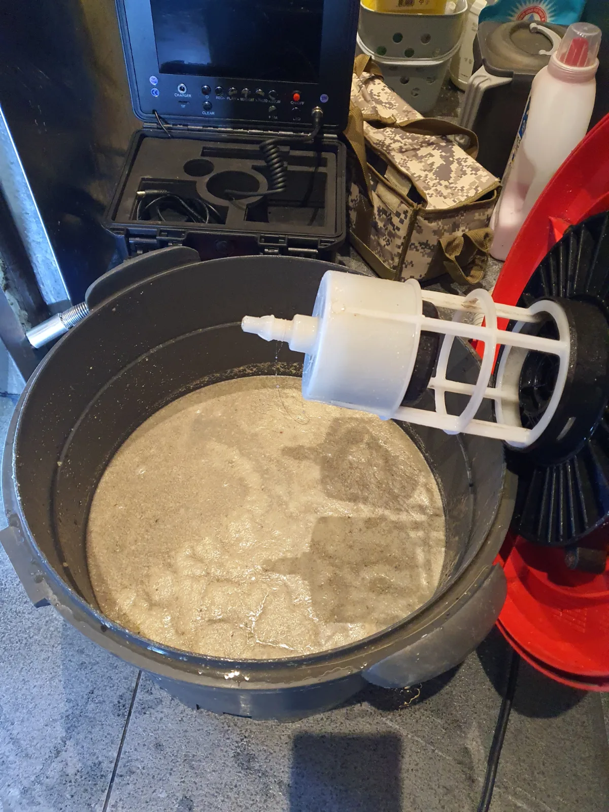

동작구 상도동 싱크대막힘, 현장 도착 후 진단
싱크대막힘 요청을 접수한 뒤 전문 장비를 준비해 동작구 상도동 현장으로 신속하게 이동했습니다.
먼저 싱크대에 물을 흘려보내 배수 상태를 확인했습니다. 물이 정상적인 속도로 내려가지 않아 싱크대 하부 배관을 점검하고, 배관 내시경을 진입시켜 내부 상태를 확인했습니다.
내시경 화면에는 배관 안쪽에 붙어 있는 기름때와 오염물이 선명하게 보였습니다. 배관 내벽에 쌓인 슬러지가 물길을 좁히면서 상도동 싱크대막힘을 일으킨 상태였습니다.
현장에서 확인한 배관 상태와 필요한 작업 방법, 작업 범위와 비용을 먼저 설명한 뒤 리지드 플렉스샤프트를 이용한 배관스케일링을 진행했습니다.
1단계: 증상 확인과 필요한 장비 작업
싱크대 하부의 배수 호스와 연결 배관을 점검하고 전문 장비를 진입시킬 수 있도록 작업 공간을 확보했습니다.
배관 구조와 막힘 위치를 확인한 뒤 리지드 플렉스샤프트 케이블을 배관 내부로 천천히 진입시켰습니다. 무리하게 장비를 밀어 넣지 않고 배관의 방향과 굴곡을 확인하면서 막힘 구간까지 안전하게 접근했습니다.
회전하는 샤프트 체인으로 배관 내벽에 단단하게 붙어 있던 기름때와 음식물 찌꺼기를 잘게 분쇄했습니다. 단순히 막힌 부분만 관통하는 것이 아니라 배관 벽면의 오염물까지 벗겨내는 배관스케일링 방식으로 작업했습니다.

2단계: 원인 구간 처리와 정상 작동 확인
샤프트 작업으로 분쇄된 기름 슬러지와 찌꺼기를 배관 밖으로 배출했습니다. 사진에서 확인되는 탁한 오염수는 싱크대 배관 내부에 상당한 양의 기름때와 음식물 성분이 쌓여 있었다는 것을 보여줍니다.
오염물을 제거한 뒤 배관 내시경으로 내부 상태를 다시 살피고 싱크대에 물을 흘려보냈습니다. 물이 정체되지 않고 정상적으로 내려가는 것을 확인한 다음 분리했던 싱크대 하부 배관을 다시 연결해 작업을 마쳤습니다.

작업 결과와 재발 방지 안내
배관 내벽을 막고 있던 기름 슬러지와 음식물 찌꺼기를 제거해 싱크대 배수 흐름을 정상적으로 회복했습니다. 통수 작업 후에도 배관 내부와 싱크대 하부 연결 상태를 다시 확인했습니다.
싱크대에 식용유나 기름기가 많은 국물을 그대로 버리면 배관 안에서 식으면서 굳고, 여기에 음식물 찌꺼기가 달라붙어 싱크대막힘이 발생할 수 있습니다. 기름은 별도로 닦아 일반 쓰레기로 처리하고, 음식물 찌꺼기는 거름망을 이용해 배관으로 들어가지 않도록 관리하는 것이 좋습니다.
동작구에서 싱크대가 막혔을 때 약품만 반복해서 사용하면 배관 깊은 곳에 굳은 기름때가 그대로 남을 수 있습니다. 이럴 때는 배관 내시경으로 막힘 위치와 내부 상태를 확인한 뒤 샤프트 작업이나 배관스케일링 등 원인에 맞는 공법을 선택해야 재발 가능성을 줄일 수 있습니다.
신라건축설비는 동작구 상도동을 포함한 서울·경기 전 지역의 싱크대막힘에 신속하게 출동합니다. 배관 내시경검사로 원인을 확인하고 샤프트·석션·배관세척 중 필요한 작업만 선택해 불필요한 과잉시공 없이 합리적인 범위와 비용으로 해결합니다.
최종 조치: 배관 내시경검사, 싱크대 하부 배관 진입구 확보, 리지드 플렉스샤프트를 이용한 배관스케일링, 기름 슬러지 및 음식물 찌꺼기 제거, 통수 확인
현장 방문 전 확인하는 비용과 작업 범위
신라건축설비는 현장 증상과 배관 구조를 확인한 뒤 필요한 작업과 예상 비용을 안내합니다. 단순 관통으로 해결되는지, 배관내시경·석션·고압세척 또는 추가 장비가 필요한지는 현장 상태에 따라 달라집니다. 출장비와 야간 작업비, 추가 장비 비용이 발생할 수 있는 경우 작업 전에 먼저 설명하고 동의를 받은 범위에서 진행합니다.
업체를 선택할 때 확인할 사항
무조건적인 ‘0원’ 표현보다 실제 작업 범위, 추가 비용 조건, 사용 장비와 사후 대응 기준을 확인하는 것이 중요합니다. 해결되지 않았을 때의 비용 기준과 작업 후 동일 증상 발생 시 점검 범위를 사전에 문의해두면 불필요한 분쟁을 줄일 수 있습니다.
동작구 싱크대막힘 자주 묻는 질문
싱크대막힘은 왜 반복되나요?
동작구 상도동 현장처럼 싱크대 물이 원활하게 빠지지 않아 설거지와 주방 사용에 불편이 발생한 상태였습니다. 배관 내부 깊은 구간이 막혀 단순한 배수구 청소만으로는 해결하기 어려웠습니다. 증상은 원인이 현장마다 다를 수 있습니다. 주방 배수관 내부에 기름때·슬러지·음식물 찌꺼기가 누적되거나 배관 구배와 긴 횡주관 때문에 반복될 수 있습니다. 단순 관통 후 다시 막힌다면 배수관 내부 상태를 확인하는 것이 좋습니다.
싱크대 물이 안 내려가거나 역류하면 싱크대뚫는업체를 불러야 하나요?
물이 천천히 빠지거나 싱크대역류가 반복되면 배수구 입구보다 안쪽 주방 배관에 막힘이 있을 수 있습니다. 현장에서는 배수 상태와 막힌 구간을 확인한 뒤 작업 방법을 정합니다.
싱크대 기름때 막힘은 약품으로 해결되나요?
가벼운 오염은 일시적으로 나아질 수 있지만 굳은 기름 슬러지와 배관 내부 스케일은 약품만으로 충분히 제거되지 않는 경우가 있습니다. 반복 막힘은 장비를 이용한 배관 청소가 필요할 수 있습니다.
싱크대뚫는업체는 어떤 장비로 작업하나요?
막힘 위치와 배관 상태에 따라 석션, 샤프트, 배관내시경, 배관 스케일링 장비 등을 사용합니다. 필요한 장비는 현장 진단 후 결정합니다.
싱크대막힘 비용은 어떻게 정해지나요?
막힘 구간의 길이와 오염 정도, 석션·샤프트·내시경 등 장비 투입 범위에 따라 달라질 수 있습니다. 작업 전 예상 범위와 추가 비용 조건을 먼저 안내합니다.
싱크대 악취도 배수관 막힘과 관련 있나요?
기름 슬러지와 음식물 오염이 배수관 내부에 쌓이면 배수 불량과 함께 악취가 나타날 수 있습니다. 다만 트랩이나 연결부 문제도 있어 현장 상태를 함께 확인해야 합니다.
싱크대막힘 서울·경기 출동지역
신라건축설비는 동작구 상도동 현장을 포함해 서울 25개 구와 경기도 31개 시·군의 배관 문제를 상담합니다. 현장 거리와 기사 배정 상황에 따라 출동 가능 여부를 먼저 안내드립니다.
서울 전 지역
강남구 · 강동구 · 강북구 · 강서구 · 관악구 · 광진구 · 구로구 · 금천구 · 노원구 · 도봉구 · 동대문구 · 동작구 · 마포구 · 서대문구 · 서초구 · 성동구 · 성북구 · 송파구 · 양천구 · 영등포구 · 용산구 · 은평구 · 종로구 · 중구 · 중랑구
경기도 주요 출동지역
수원시 · 용인시 · 고양시 · 화성시 · 성남시 · 부천시 · 남양주시 · 안산시 · 평택시 · 안양시 · 시흥시 · 파주시 · 김포시 · 의정부시 · 광주시 · 하남시 · 광명시 · 군포시 · 양주시 · 오산시 · 이천시 · 안성시 · 구리시 · 의왕시 · 포천시 · 양평군 · 여주시 · 동두천시 · 과천시 · 가평군 · 연천군